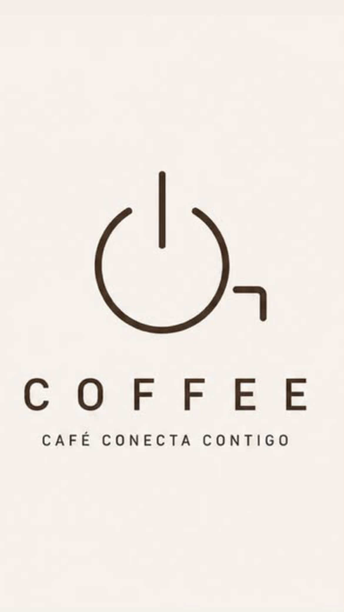

Latte de la casa
Espresso, leche texturizada y nuestro toque secreto.
4.50 €
ON COFFEECAFÉ CONECTA CONTIGO Ver cartaCafé de especialidad · Hecho con calma
Tu pausa favorita, servida en una taza. Granos seleccionados, recetas honestas y un espacio para volver a ti.

Más que café
En On Coffee creemos que las mejores conversaciones empiezan con un “¿te apetece un café?”. Somos un punto de encuentro para disfrutar lo cotidiano y hacerlo especial.
Estamos cerca